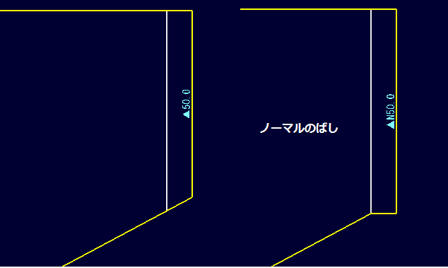

端部のばし設定
端部のばし設定
条材、板部材の端部に工作属性として”のばし”を設定します。この属性は部品図を作成する際に適用されます。


操作方法
板部材の場合はのばしたいエッジ、条材の場合はのばしたい側のエッジ（どれでもよい）を選択してOKボタンで確定します。付加された属性のシンボルが表示されます。(△仕上げのばし、▲荒のばし)
属性を削除する場合は通常の要素と同様、属性要素を削除します。
パラメータ
- 端部エッジ


のばしを設定するエッジ（複数可）を選択します。条材の場合は端部のエッジのどれかひとつでそのエッジ側の端部にのばしを設定することになります。
- 設定

のばし量、種類（荒のばし、仕上げのばし）、ノーマルにのばすかどうか、を設定します。
